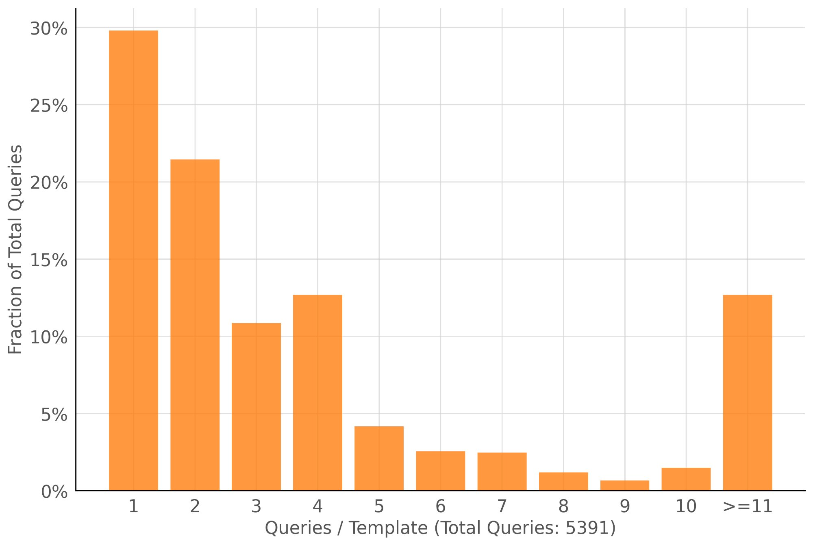
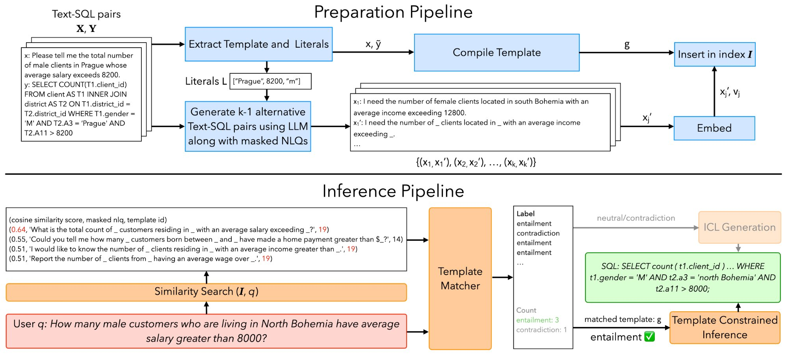

Includes a technical deep dive for system builders
tl;dr
TeCoD converts past NL–SQL pairs into reusable templates and forces the LLM to follow the matched template during decoding — boosting Text-to-SQL accuracy from ~60% to ~90% on recurring queries, without any fine-tuning.
When we first looked at a large bank's query workload, something clicked: businesses ask the same questions over and over. That one observation became the foundation of TeCoD — and it changed how we think about making AI-powered databases actually reliable.
Large language models have made it exciting to imagine a world where anyone can query a database just by typing a question. No SQL knowledge needed. Just ask, and get an answer.
We've been working in this space for a while, and the honest reality is: it works beautifully on benchmarks and falls apart in production. When we looked at accuracy broken down per database schema — not averaged across schemas — we saw numbers as low as 20–30% for some enterprise databases. For a system that's supposed to replace manual querying, that's not good enough.
what we observed
The two standard options for improving Text-to-SQL are fine-tuning and in-context learning (ICL). Fine-tuning is expensive, needs a large labeled dataset upfront, and causes models to forget their general knowledge. ICL — slipping a few related examples into the prompt — is cheap and flexible, but it keeps disappointing us.
We found cases where the LLM was shown an in-context SQL example differing from the correct answer by a single constant — say, a city name — and still generated the wrong SQL. The model couldn't reliably extract even that minimal signal from the context.
While analyzing a real query workload from a large bank, we noticed something that reframed our thinking entirely. Business queries aren't random. Executives ask structurally identical questions again and again — same joins, same filters, same aggregations — just with different values. "Revenue in Q3" becomes "Revenue in Q4." "Customers in Berlin" becomes "Customers in Munich." The natural language varies, but the SQL skeleton stays the same.
When we modeled this sequentially, we found that more than 50% of queries would find a matching structural template in previously seen queries. That's a massive opportunity. If we could reliably recognize these recurring patterns and exploit them, we could make SQL generation dramatically more accurate for the majority of real-world queries.
Over 50% of enterprise queries share an existing SQL structure — only the values change. TeCoD turns that repetition into reliability.

Enterprise queries repeat heavily. Query distribution from a large bank's workload (5,391 total queries). ~30% of queries belong to a template seen only once, but the majority share a template with prior queries — meaning TeCoD can provide high-accuracy SQL for the bulk of real analytical workloads.
our approach
The core idea is simple: convert your previously seen and verified NL-SQL pairs into parameterized templates — SQLs with the specific literal values (strings, numbers) replaced by typed slots. When a new user question structurally matches a stored template, force the LLM to follow that template during generation. Don't just suggest it. Enforce it at the decoding level. And when no template matches — for novel or one-off queries — TeCoD simply falls back to standard in-context learning, so nothing breaks.
a concrete example
Here's what the system actually does. A user asks a new question. TeCoD recognises it matches a stored template — same structure, different values — and fills in only the slots.
The LLM never had to invent the query structure — it only had to identify three values from the question. That's why accuracy jumps so dramatically.

TeCoD system overview. The preparation pipeline (top) converts labeled NL-SQL pairs into templates, generates synthetic paraphrases, and indexes them for retrieval. The inference pipeline (bottom) matches each user query to a template via NLI and either runs template-constrained decoding or falls back to standard ICL generation.
The "force the template" part is where we had to do real engineering work. Existing grammar-constrained decoding (GCD) libraries like Outlines or Transformer-CFG are general-purpose — they let you define any grammar and mask invalid tokens at each decoding step. That works, but it's slow, and it's sensitive to formatting.
We hit two problems. First, style mismatch: each LLM has its own SQL formatting preferences — keyword casing, whitespace, alias conventions. A fixed string template like "WHERE Name = [string] LIMIT [number]" would confuse models that prefer lowercase keywords or different spacing. We solved this by converting templates into flexible grammars that allow any syntactically equivalent surface form.
Second, latency: standard GCD runs the grammar checker at every single decoding step, even for the parts of the SQL that never change across queries. That's wasteful. We designed a two-phase approach:
One subtle issue: LLM tokenizers sometimes create tokens that straddle partition boundaries (e.g., a single token "1;" spanning a number literal and the following semicolon). We handle this by including "boundary tokens" as left and right context when generating each literal, preventing over-masking. Dropping these context tokens caused accuracy to fall by over 10% in some models.
This two-phase approach achieves 1.5–2.3× lower latency than standard GCD, and for some models on Spider, even beats unconstrained generation speed. In short: by skipping grammar checks for the static parts of the SQL and only running them for the literal slots, TeCoD gets the accuracy benefits of constrained decoding without the usual latency cost.
results
We tested TeCoD on the BIRD and Spider benchmarks across eight LLMs — from small 1B models to 15B fine-tuned specialists to state-of-the-art Text-to-SQL models. The results were consistent:
One result we found particularly meaningful: smaller models like Granite-3.1-8B, when paired with TeCoD, matched or exceeded the performance of much larger baselines like XiYanSQL QwenCoder-14B using only ICL. You can get the accuracy of a big expensive model with a small, fast, deployable one — if you use the right inference strategy.
TeCoD doesn't make every model better at everything. It makes every model dramatically better at the queries your users actually ask most often.
who should use this
TeCoD requires a labeled workload to seed the template library. It's designed for enterprises that already have — or are actively collecting — verified NL-SQL pairs. If that's you, here's where it fits well:
If your workload is mostly exploratory — users asking genuinely novel, one-off questions — TeCoD will still help where it can match, and fall back gracefully where it can't. But the highest gains come when your workload has structure and repetition, which in our experience describes most enterprise analytics.
what's next
The current version masks only literal values. A natural extension is to allow more flexible template representations — masking clauses, subexpressions, or even structural variations in joins. We're also interested in hybrid approaches that smooth the boundary between template-based generation and fully flexible generation for tail queries.
More broadly, we think the principle here — identify recurring patterns in a workload, compile them into structural constraints, enforce them during generation — is likely applicable beyond SQL to other structured generation tasks. That's something we're actively thinking about.
The full methodology is in the paper; the code is on GitHub. We'd love to hear from anyone building in this space.
read the work
Explore TeCoD — the paper, the code, and everything in between.
Whether you want to dig into the full methodology, reproduce our results, or integrate TeCoD into your own Text-to-SQL pipeline — both resources are open and available.
citation
If you use TeCoD in your research, please cite:
@article{10.1145/3769822,
author = {Jivani, Smit and Maheshwari, Sarvam and Sarawagi, Sunita},
title = {Reliable Answers for Recurring Questions: Boosting
Text-to-SQL Accuracy with Template Constrained Decoding},
year = {2025},
journal = {Proc. ACM Manag. Data},
volume = {3},
number = {6},
articleno = {357},
numpages = {26},
month = dec,
publisher = {Association for Computing Machinery},
address = {New York, NY, USA},
doi = {10.1145/3769822},
url = {https://doi.org/10.1145/3769822},
keywords = {constrained generation, partitioned decoding,
structured code generation, text-to-sql}
}
authors